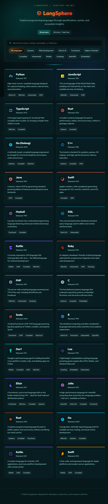

Specializing in full-stack software development and quality engineering. I build robust applications
with structured backends, optimized databases, and comprehensive automated/manual testing coverage to
ensure reliable production delivery.
Affiliated with the University of Kerala. Built foundational expertise in object-oriented
programming, data structures, relational databases, and core web technologies.
↗Click to open full profile
Foundational Coursework & Modules
Object-Oriented Programming: Java & C++ core principles, memory
management, and OOP paradigm design.
Data Structures & Algorithms: Arrays, linked lists, stacks, queues,
trees, and algorithmic sorting.
Relational Database Management (RDBMS): SQL query building, ER
diagram modeling, and table normalizations.
Web Technology Fundamentals: Structured HTML5, CSS3 layout styling,
and client-side JavaScript scripting.
Operating Systems & Networking: Process management, TCP/IP
networking models, and system administration basics.
Utilized for enterprise backend architecture, application development, and building logic
verification systems. Proficient in object-oriented structures, Visual Studio IDE, .NET frameworks,
and integrating desktop/web applications with SQL databases.
Featured Works

LangSphere
Programming Language Intelligence Platform
A HUD-themed, sci-fi inspired web platform for exploring and comparing programming languages.
Features a dynamic search and filter system with category tabs, letting users lock onto
languages by name, creator, paradigm, or feature — surfacing specs, syntax, and
combat-ready metrics in an immersive grid interface.
Build Details
HTML5
Structured the platform with semantic sections for language profiles, comparison content, navigation, and accessible interactive controls.
HTML / CSS / JSInteractive UISearch & FilterSci-Fi DesignVercel